I’ve been on instagram recently, checking out synthetically addictive features such as “Messages” and “Home” and “Search”. One feature that is particularly interesting is “Explore”. On my Explore page, I can, without fail, find a combination of:
- Vintage collectors flaunting a recent “come up”—typically a hoodie or shirt. I find these posts productive and I occasionally like the clothes they are showing. I recommend these accounts, particularly if they are showing weirder, non-traditional garments.
- Fashion accounts showing archive pieces from well known runway designers. These posts often provide additional context in their caption, particularly the year, season, and importance of the displayed garment(s). I find these posts informative and also recommend them.
- Thrift resellers who are trying to sell products they have just “pulled” from the “bins”. These accounts aren’t very interesting and I generally disregard them.
And finally...
- Other clothing brands that seem to be my contemporaries…
What do I think about the other clothing brands, you may ask. Do I view them through a lens of competition? Envy? Do I like the clothes they are making? What trends am I noticing and how would I diagnose the landscape of the clothing-making instagrams? I intend on answering some of the latter questions in the coming paragraphs but plan on ignoring the question regarding competition and envy; I don’t feel like answering that right now.
 |
Screenshot of my Explore page |
The Clothes From Other Clothing Brands
It’s interesting to see how instagram attempts to categorize certain “styles” of brands—it typically does a pretty good job of it. When I click a post of, let’s say, a “trendy, y2k-inspired” brand, my explore feed will be flooded with other, aesthetically similar brands (of which there is no real shortage). Because I am pretty uninterested in those brands, I only get a few every so often and I rarely engage with the content. This applies exponentially to other brands that are also seemingly irrelevant to my own sensibilities as a brand owner: those who do bizarrely-gothic, dystopian techwear (typically Korean-run), those who are creating non-graphic couture/costume, those who are knitting, those who are crocheting, those who are creating traditional, logo-based “skatewear” or “streetwear”, and more. Over time, I’ve realized (and so has instagram) that I mostly engage with other brands who do loud graphics on plain shirts, hoodies, or pants, similar to me, sometimes. They are eye-catching. And, more and more, these brands turn out to be what I would classify as memewear.
What is Memewear?
In order to talk about what I think memewear is, I think it is important to clarify some important pieces of context which I will write in paragraphs that will also be riddled with some of my unsolicited opinions. I’ll begin at the tip of the pyramid and work my way down, in a reversing of power hierarchies.
A) Memes in graphic-based Fashion
Demna Gvasalia, who founded the clothing brand Vetements and is now the creative director of Balenciaga, is a bit of a frontiersman in the post-ironic, graphic-based fashion world. Similar to many, his career catapulting graphic for Vetements in 2014 was a simple logo-flip—the word Vetements written out in a death metal font. This is not an uncommon occurrence. Ava Nirui, who now “creatively directs” Heaven by Marc Jacobs, was launched into the limelight through a series of logo flips of ubiquitous luxury houses (including one of Marc Jacobs) set in the context of “low brow” streetwear treatments that she posted on social media in the 2010s. It’s easy to see why; a recognizable brand subverted by a simple gesture of irreverence is a surefire way to go viral and, evidently, a surefire way to become employed by the exact company you made fun of.
| 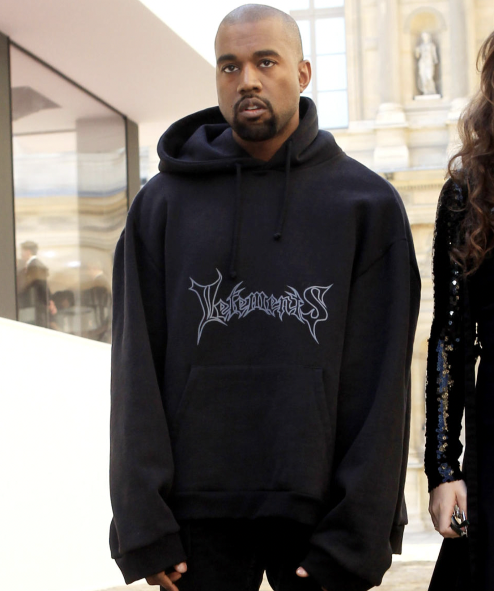
|
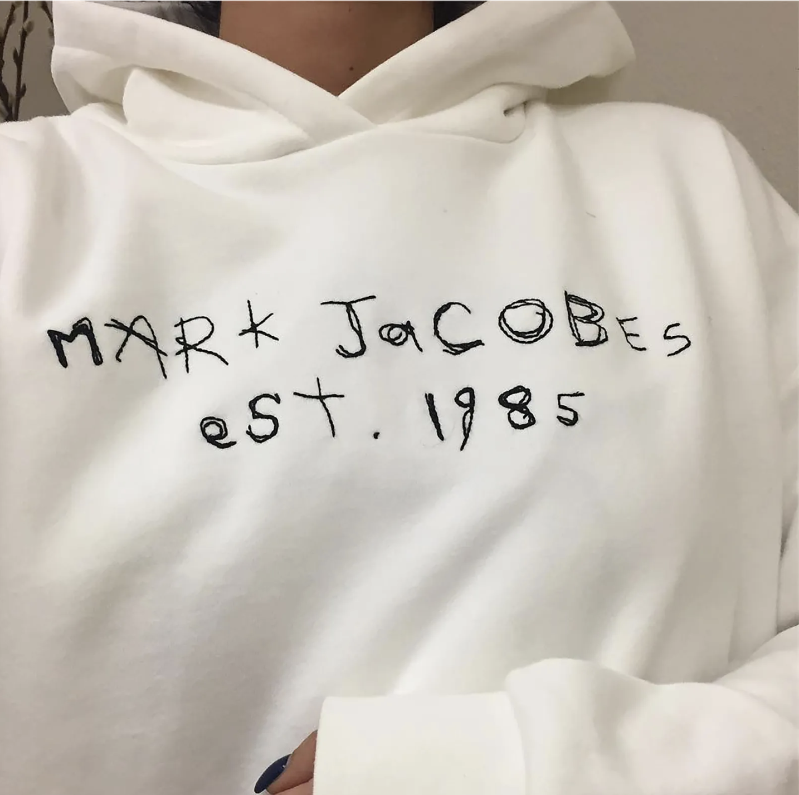
|
Demna Gvasalia, Vetements Hoodie |
|
Most recently, Demna Gvasalia released a line for Balenciaga that features The Simpsons characters in goth/punk wear on graphics that were heat transferred on a range of oversized, ill-fitting T-shirts and bags. His tenure at Balenciaga has proved his unwavering-ness in the field of post irony—collection after collection he attempts to poke fun at his own customer base in a tongue-in-cheek manner that I once found important but now find less important. In a postmodern world where irony=cool, there isn’t much room to make fun of an audience that is already making fun of themselves—if these were serious, well-fought critiques, neither Demna Gvasalia nor Ava Nirui would be employed by their current employer; there’s an illustrative-ness involved here, a Telling as opposed to a Showing. I find this lack of distinction dangerous. Even (historically earnest) Virgil Abloh’s contribution to ironic graphic-based fashion—an attempt at self-referentiality through a relatively misguided use of Helvetica and quotation marks—was a piercing bullet just barely dodged.
| 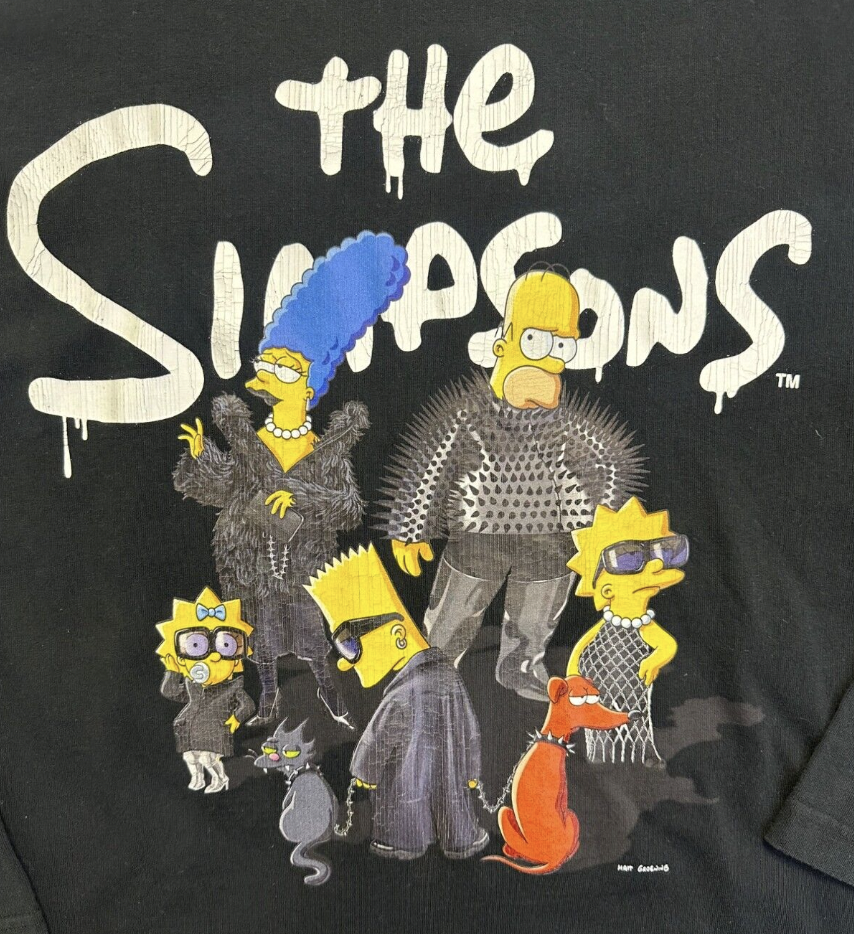
|
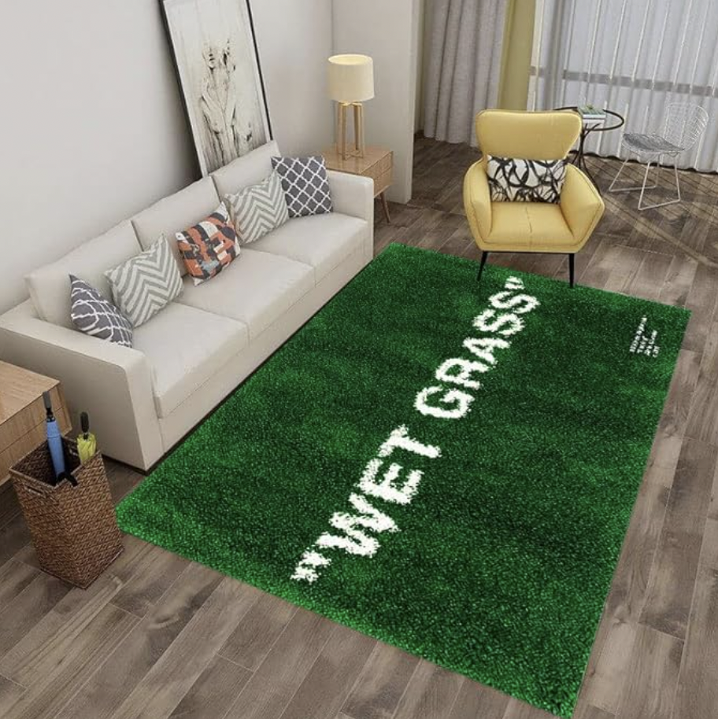
|
Balenciaga The Simpsons shirt | Wet Grass Rug by Virgil Abloh |
B) Memes in Fine Art
| 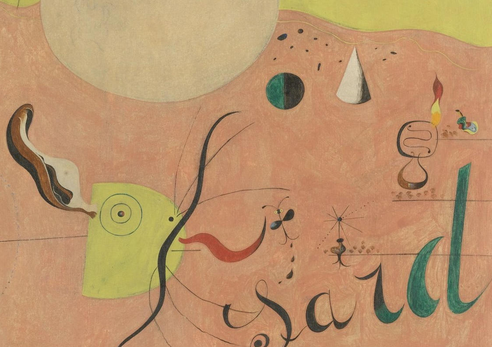
|
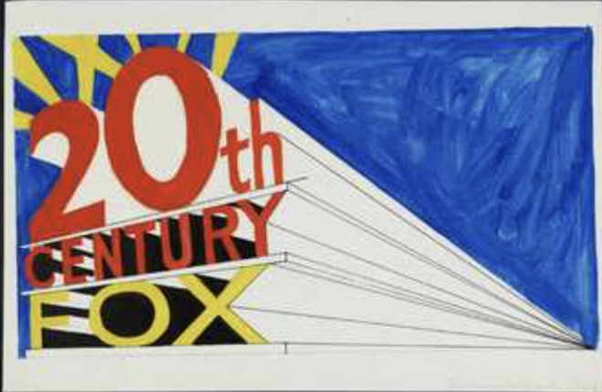
|
Joan Miro, (section of) The Hunter, 1924 | Ed Ruscha, Standard Station, 1966 |
Oftentimes, I’ve found that, similar to fashion, graphic design follows the trends of fine art with pioneers in painting and sculpture ushering in eras of modernism, postmodernism, etc.. In the instance of irony as it pertains to memeology, however, there seems to be a fun reversal of this—fine art is finally following suit. This can be seen most overtly via the prevalence of typography (in a hyper contemporary sense) in new painting and sculpture. Meaning, typography as it exists in the space of technology and the internet, which aestheticizes words and letterforms in a very different way than, say, the humanist scribbles of Joan Miro or the architectural draftsmanship of Ed Ruscha. It is, more often than not, the depiction of computer-based fonts in an art piece that is a tell-tale sign of the post irony I am alluding to—fonts like “Times New Roman” or “Arial”. For more explicit works, an obvious meme reference will be made: an emoji or a pop culture figure. Seeing fine art featuring fonts and/or memes is strange, complex, and worrisome for a multitude of (I suppose, also, partially impractical) reasons.
- On most occasions, there is a lack of reverence for the font. Much like how a graphic designer who is designing a poster for an opening might make the background color a bright red (which might damage the photo of the painting being displayed on said poster), a font, when mined out of a digital format, becomes something else entirely. A typeface, when flattened, becomes an image, which is entirely different from a typeface. How much is this flattening understood? How much does the painter want it to be a typeface rather than an image? Is the painting attempting to depict a typeface or a rasterization of a typeface? Does it matter to them?
| 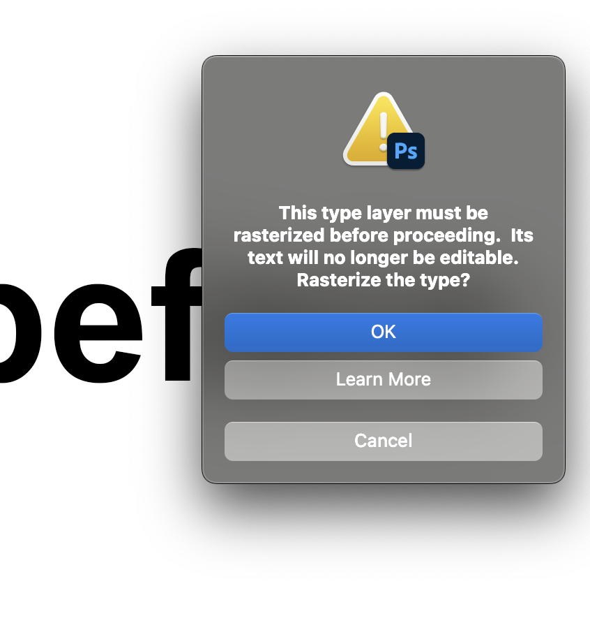 |
Rasterizing a typeface on photoshop prompts an urgent dialogue box making sure you are certain of the irreversible action you are about to make. |
| 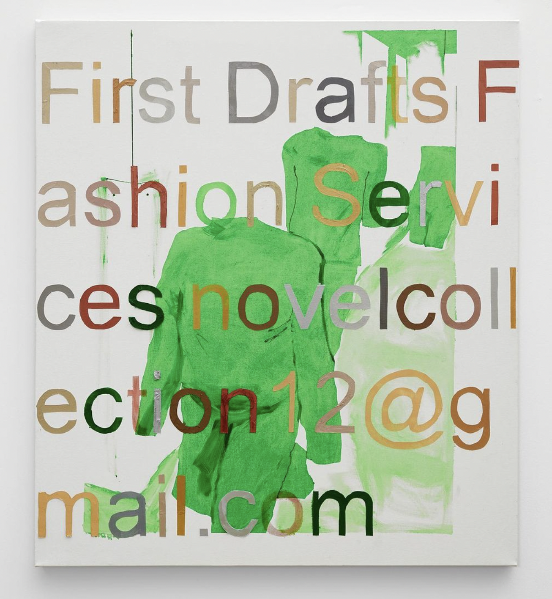 |
Arial present in painting |
| 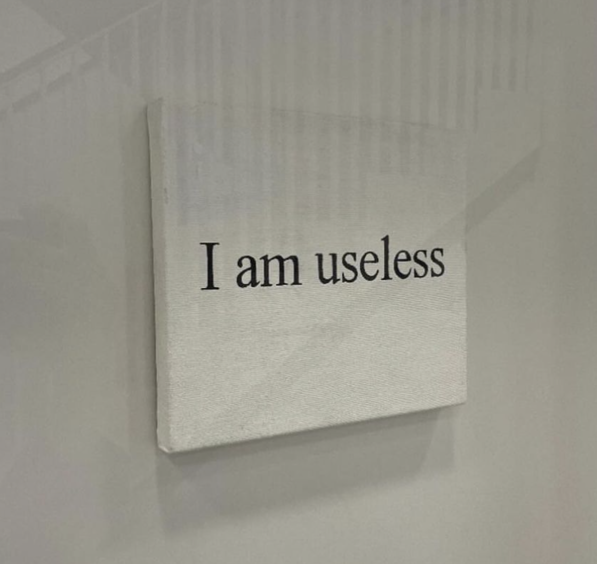 |
Times New Roman being used in a painting |
- Oftentimes, mostly because of the aforementioned ambiguity of whether or not this is a typeface or an image of a typeface, the painter will disregard fidelity when depicting typography. I believe this is a mistake, especially when painting memes. A successful meme has more visible wear than a newly made or unsuccessful meme. Whether or not this meme is new or old, permeated or not permeated, successful or unsuccessful, should be depicted. This especially causes issues when physical medium is involved. I’ve noticed that many times, to depict digital subjects, painters have taken to using the airbrush which, hypothetically, doesn’t show the “hand” or mark making as much as a paintbrush would; gradation is clean and value is smooth. I believe these to be misconceptions. The hand is prevalent and it is unconvincing as a digital thing; the noise/pointilization involved in spraying, the crudeness due to distance from the canvas, and the overall stacking of value does not coincide with anything on the computer. I often find that well blended oil paint is more convincing as a digital space depicted physically than airbrushing is.
| 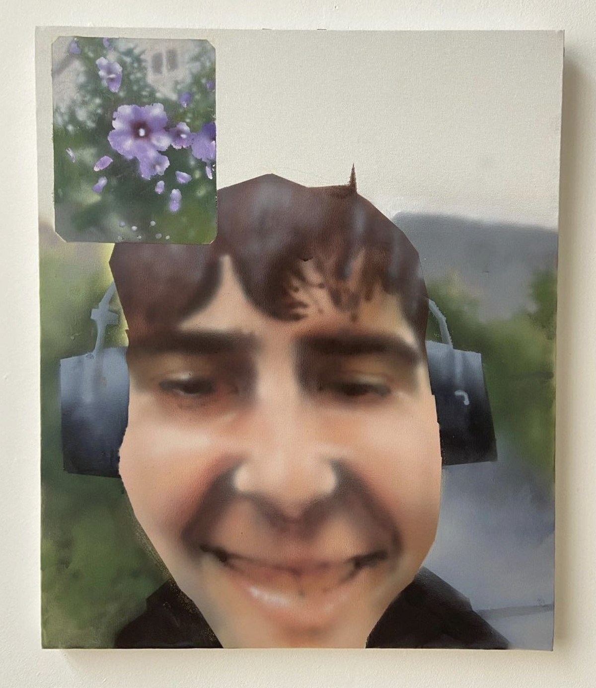 |
Airbrush used as a faux-digital brush |
- It is somewhat dishonest. Unlike Ava Nirui’s virality, which is popular for obvious, transparent reasons (however unrefined), a painting that relies on a meme/font is usually coy in admitting its need for using the meme/font. It dances around the meme like a baby deer, awkward and uncoordinated. Is there really no other more nuanced, implicit way to communicate the message? How dependent is the painting on the meme? How dependent is the meme on the painting?
 |
Painting of a meme |
C) Memes in New Brands
This takes me to the non-high-fashion, “low fashion” brands that I would refer to as peers: those with a relatively minor, but perhaps cult-like following and have roots in some DIY/indie-ness: these brands are what typically riddle my explore page. I’d like to look at a few examples of this in order to be direct, precise, and transparent, but to avoid being combative, I will refrain. In a sense, these brands have as much merit as the artists and fashion houses I alluded to in my previous paragraphs and I largely admire their success. I admire 99% of brands that have independently sourced a following (especially on the internet) and sell graphic T-shirts and hoodies, possibly for a living. It is impressive and inspiring. On the other hand, having these types of brands on my Explore page does not implicate me in this “scene”, it merely speaks to my fascination with it; I do not believe that The Blank Traveler should or would be categorized as memewear.
Another important distinction I should make is that, unlike memes in high art and fashion which are purely referential, the memes present in low fashion are (for the most part) newly fabricated by the brand owner; the art is not the reference, recontextualization, and appropriation of a preexisting meme, but the meme itself. This calls for a different type of conceptual labor—even now, as I am writing this, I am muddying my own thoughts in the multiverse of memeology. If new memes are being made on T-shirts, then the presumed format is physical. This means the translation of a photo of a memewear T-shirt to the digital space is the recontextualization of the meme, meaning the PNG mockup is the painting, meaning the critique does not lie within the medium of the meme but within the meme’s very own meaning. Ultimately, this makes sense, since the innate lowbrowness of meme culture does not contradict and therefore can not critique the lowbrowness of the T-shirt. Instead, the T-shirt belongs as an integral part of the meme, the fidelity being thread count as opposed to pixels. It asserts that the implication of the meme being worn holds as much value to the meme as whitespace does to a typical internet-based meme. When this is considered, articulated, and apparent, memewear becomes a better version of any meme you could possibly imagine because its commodity is baked into its own existence.
| 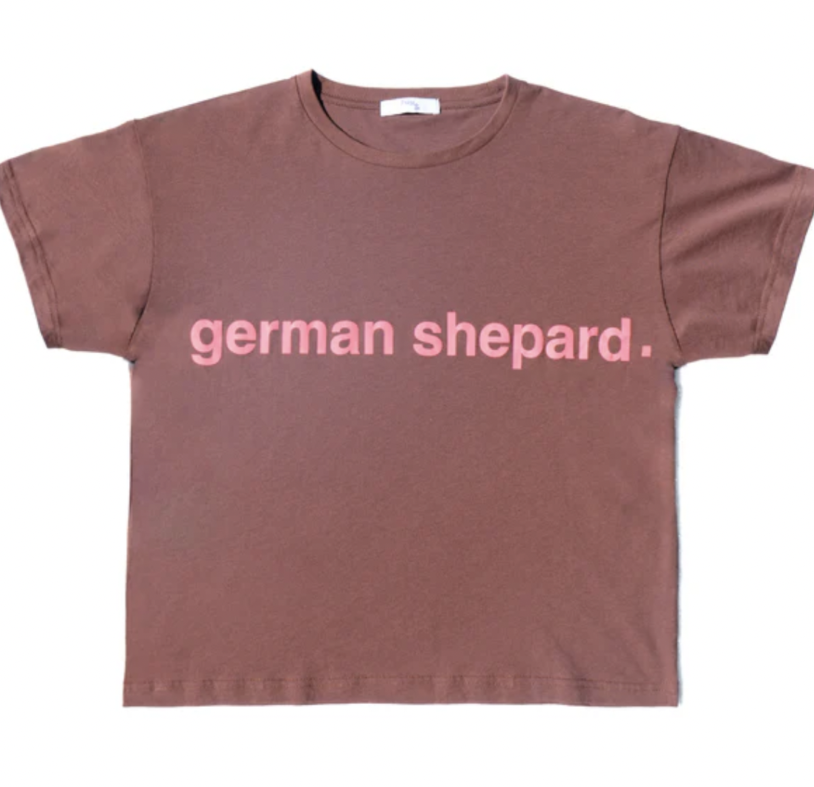
|
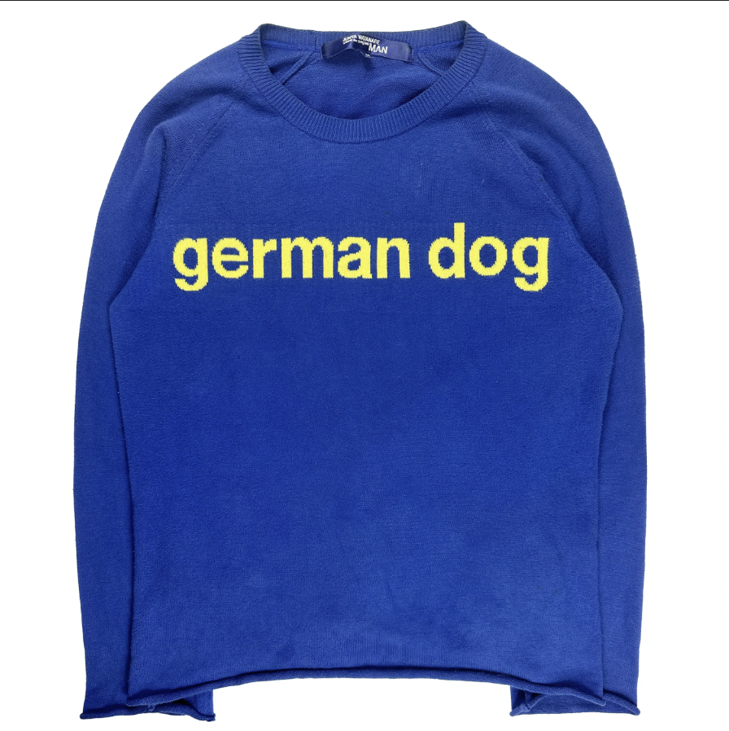
|
|
| Sweater by COMME DES GARÇONS |
What do low fashion memewear brands contribute to the culture of independent designers?
Well, for one, they emphasize that designing a successful product isn’t about physical labor, but rather about cleverness. Much like their high fashion counterparts dealing in memeology (Demna and Ava, as mentioned), they prove that the time of the internet calls for one (brand owners in particular) to speak the language of the internet, which is satire. The most unfortunate part of this reliance on cleverness, to me, is the fact that everybody thinks they are funny. It also means that “funny” fonts are often being used as if they are inherently funny: default fonts like “Comic Sans” or “Apple Chancery”. Using these fonts is not funny, I don’t think. For these reasons, I try not to use these fonts in my own clothing even though I do enjoy their formal, ornamental qualities. Most recently, I’ve used “Akaya Kanadaka” and “Bradley Hand” which are handwritten fonts that I think look good and have not been ironicized (though, even “Bradley Hand” may be becoming tainted).
Secondly, and adding on to the previous point, it emphasizes the end of brands representing a lifestyle. This means that the slow, arduous journeys of brands like Supreme or Stussy who amassed cult-like followings over decades in order for their logo to represent a specific history or culture is probably over. In the grand scheme, it renders logo tees—at least unironic logo tees—obsolete. This, for the streetwear purist, means the end of time. In some ways it is catastrophic, I agree. However, it also forces brands to be less dependent on name recognition and, as a result, more design oriented, which benefits the fields of fashion, graphic design, and fine arts. This also means the images are more interesting, the designers are more present, the industry is more accessible, and the ideas are more fruitful/productive.
Lastly, this aesthetic, like any trend, is up for expiration. I am unsure of what could replace it, but I am hyper aware of this truth when looking at this memewear. Understanding its livelihood—its origins, its utility, its pitfalls— informs my own work. I often make certain design decisions or tools in order to avoid the language of memewear; this often manifests as an indulgence in conservative and pure Graphic Design (capital D and G) techniques which I use to cushion any jagged edges in my cruder, amateurish imagery. I simultaneously remember to keep those edges jagged to stay current, risky, and unpredictable. Like anything in art, I find implementing all of this quite a balancing act that I often look forward to.
| 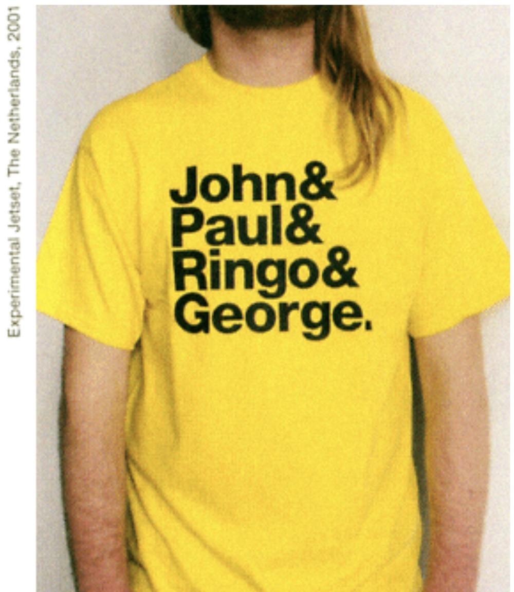 |
& Tee by Experimental Jetset |
How should I close out here? I haven’t really made a conclusion on this yet. I will say that this is a serious and complex topic that deserves close examination and, while my thinking is still quite rough, I feel closer to an idea when I write it all out. All I am able to do is think, create, think, create, think, and create again and I hope my own clothing products reflect the introspections, hesitancies, optimisms, and pessimisms I have expressed in this excerpt. Thank you for reading.
|